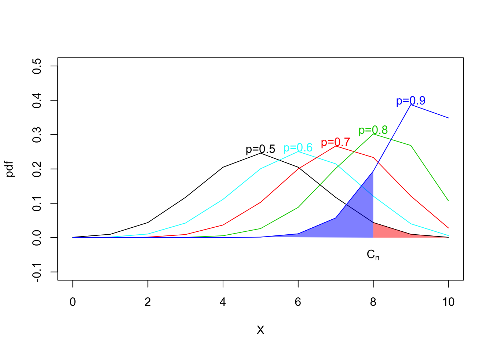

第 3 章 假设检验
假设检验部分模拟相对简单,只需要在估计出参数值后,按照检验统计量的形式正确计算即可.主要难点在于构造检验统计量以及给出检验统计量的渐近分布.
常用的办法是通过自助法(bootstrap)估计分布.
我们以最简单的二项分布为例,说明一些假设检验中的概念.
| X | p=0.5 | p=0.6 | p=0.7 | p=0.8 | p=0.9 |
|---|---|---|---|---|---|
| 0 | 0.0010 | 0.0001 | 0.0000 | 0.0000 | 0.0000 |
| 1 | 0.0098 | 0.0016 | 0.0001 | 0.0000 | 0.0000 |
| 2 | 0.0439 | 0.0106 | 0.0014 | 0.0001 | 0.0000 |
| 3 | 0.1172 | 0.0425 | 0.0090 | 0.0008 | 0.0000 |
| 4 | 0.2051 | 0.1115 | 0.0368 | 0.0055 | 0.0001 |
| 5 | 0.2461 | 0.2007 | 0.1029 | 0.0264 | 0.0015 |
| 6 | 0.2051 | 0.2508 | 0.2001 | 0.0881 | 0.0112 |
| 7 | 0.1172 | 0.2150 | 0.2668 | 0.2013 | 0.0574 |
| 8 | 0.0439 | 0.1209 | 0.2335 | 0.3020 | 0.1937 |
| 9 | 0.0098 | 0.0403 | 0.1211 | 0.2684 | 0.3874 |
| 10 | 0.0010 | 0.0060 | 0.0282 | 0.1074 | 0.3487 |

显著水平=第一类错误=\(\alpha\):为图中红色区域的面积
第二类错误=\(\beta\):为图中蓝色区域的面积
功效=势=power=\(1- \beta\):为图中蓝色曲线下空白面积
检验的相合性:
- 在\(H_0\)下, 拒绝概率(size)收敛到\(\alpha.\)
- 在\(H_1\)下, 拒绝概率(power)收敛到\(1.\)